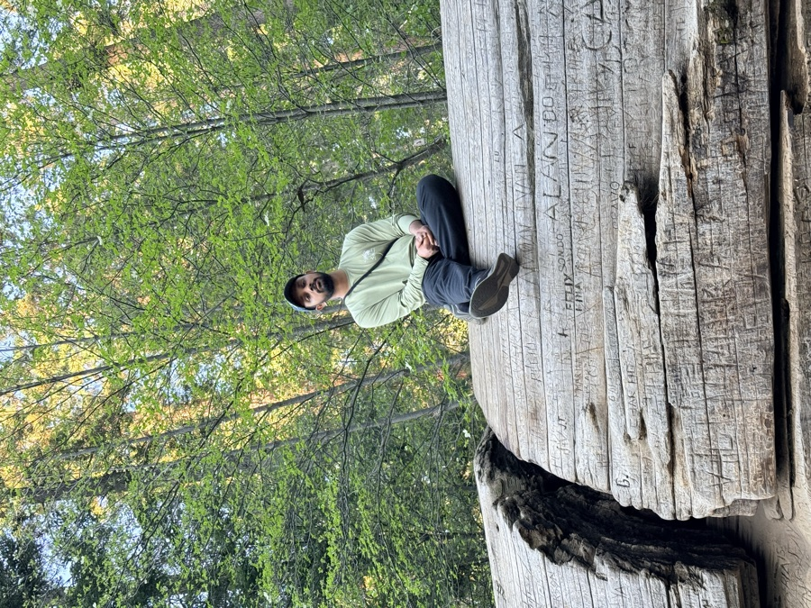
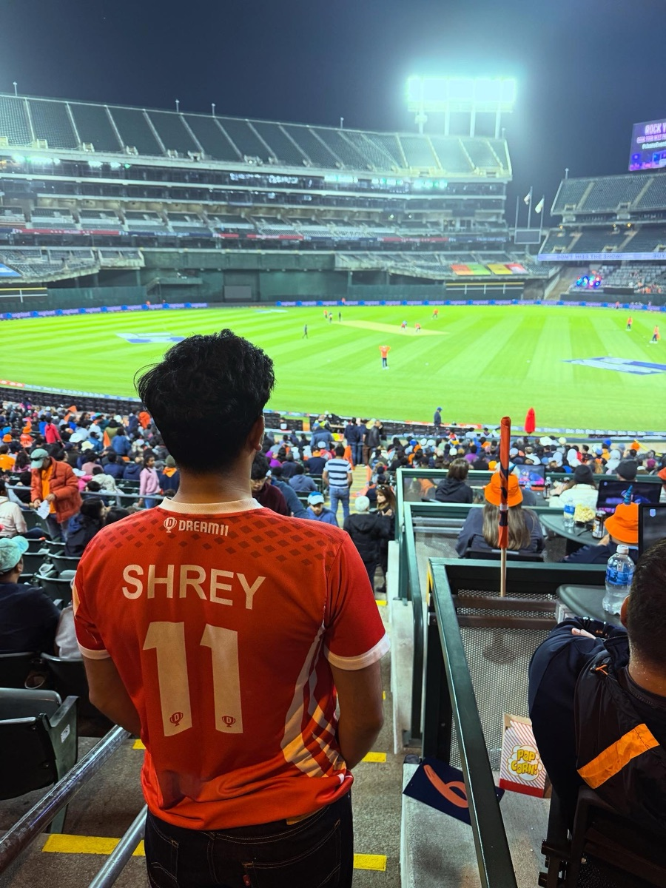

Shrey Jain
I work on AI systems. Currently at Meta.
I'm a data scientist and AI engineer. Most of my work sits where machine learning, operations research, and production engineering meet: mixed-integer optimization, causal inference, fine-tuning, GPU serving, and the infrastructure underneath it all. What I build ships to production and stays there.
I've shipped models and systems at Meta, CXAI, TruckX, Dream11, and OYO. The problems change. The goal is always the same: make something that actually works at scale.
Outside of work, I build iOS apps and tools for myself, mostly things I couldn't find and decided to make.
Golden Gate Park, San Francisco
Data Scientist
AI systems for internal operations: NLP pipelines, a natural-language-to-SQL agent, and OR models that schedule resources across facilities globally.
Building sarvis
Behavioral intelligence for iOS. Captures what you say, figures out what you meant, surfaces the patterns you can't see yourself.
Claude Code skills
Tools like cortex, a PM brain that any git repo can install in one command. Built because I needed it.
Also, a life.
I'm not the guy who only talks about models. I swim, I paddle in the Bay, and I lose most weekends to California: the redwoods, Tahoe, and every pullout on Highway 1 worth stopping at.
The breadth isn't an accident. People who only do one thing tend to solve every problem the same way.


Working on something interesting?
If you're building something worth talking about, whether that's AI systems, data, or a company, I'm usually reachable. shrey.jain252@gmail.com